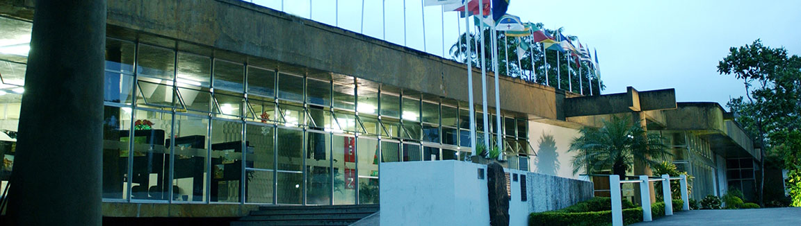

Palácio da Cultura
O Palácio da Cultura é um dos mais importantes equipamentos culturais de Campos e um dia já foi considerado uma das mais importantes obras arquitetônicas do Brasil. Hoje o espaço é ocupado por promessas não cumpridas de governos que insistem em não perceber que cultura é desenvolvimento social, educacional e econômico. O espaço possui, além da área da biblioteca e da galeria de arte, um anfiteatro na área externa, que divide espaço com o jardim projetado pelo artista plástico e paisagista Roberto Burle Marx. Tomamos a liberdade de aqui expressar nossos pensamentos sobre esse importante espaço cultural que há anos não cumpre com sua função social e que não enxerga perspectiva de voltar a cumprir com a função para a qual foi projetado. Pensamos que o espaço que temos aqui serve para informar e abrir lugar para o debate sobre de que maneira o poder público da cidade de Campos olha para a cultura. Por acreditar nisso, o projeto Campos Cultura publica abaixo, na íntegra, artigo escrito pela jornalista Ulli Marques, publicado em 2019 pelo Jornal Terceira Via. Leia. Compartilhe.
De portas fechadas há cinco anos, o monumento com viés artístico deve abrigar, após o final das obras, um centro de empreendedorismo
Um município como Campos dos Goytacazes, berço de importantes nomes da literatura e do teatro brasileiros e considerada ainda no século XX como a capital do intelectualismo fluminense, deveria ter o seu “Palácio da Cultura”. Foi com esse pensamento que o prefeito Rockefeller Felisberto de Lima idealizou o projeto, nos moldes do concretismo, no início da década de 1970. Acontece que tanta efervescência cultural nesta cidade não bastou para sustentar o ideal e manter o papel desse monumento, que já foi um dos mais importantes e arrojados do Brasil, intacto. Embora tivesse uma finalidade específica, ao longo de sua história, o local já foi utilizado para diversos e divergentes propósitos e, em breve, após as intervenções estruturais que parecem não findar, 50% do monumento deverá abrigar um “Centro Municipal de Inovação” a fim de “fomentar o empreendedorismo”. Contudo, em um tempo em que o conhecimento, artístico ou acadêmico, é relegado a planos inferiores, pior que a descaracterização do prédio é mantê-lo de portas fechadas, como está há cinco anos.
A presidente da Fundação Cultural Jornalista Oswaldo Lima (FCJOL), Cristina Lima, garante que “o Palácio da Cultura continuará sendo um espaço voltado para as atividades culturais”, mas, agora, “de uma forma criativa e mais dinâmica”. Para a historiadora e escritora, Sylvia Paes, a dinamicidade das atividades que ocorreram e ocorrerão no local está no cerne do monumento, uma vez que “é justamente da transformação e adaptação que se faz e se fez a história”. Já o jornalista Avelino Ferreira, que já foi presidente da mesma Fundação, acredita que “não há nada que destoe mais da cultura do que a emergência do empreendedorismo”.
Para compreender os meandros dessa discussão em torno da função histórica e social desse prédio, é necessário conhecer a trajetória desse local durante os seus 46 anos.
O Palácio da Cultura
A história começou quando a Biblioteca Nilo Peçanha, à época situada no Centro de Campos, já não comportava o acervo e o fluxo de leitores. Rockefeller de Lima, recém-eleito prefeito de Campos, decidiu, então, construir um monumento arquitetônico voltado para a arte em sua concepção mais ampla. Sucede-se que a área escolhida para abrigar tal prédio, a antiga “Praça da Bandeira”, era pouco frequentada pelo público uma vez que não havia estabelecimentos comerciais ao redor do que hoje é, veja só, a Avenida Pelinca. A oposição política daquele período foi veementemente contra a construção do Palácio devido à proximidade com a Santa Casa de Misericórdia. O jornalista Oswaldo Lima, que liderava o jornal Monitor Campista, foi um dos críticos mais ferrenhos e justificava sua posição porque acreditava que os pacientes da unidade poderiam sofrer com a perda da área verde e a colocação de um “bloco de concreto” a frente de suas janelas e também porque a “distância” do Centro dificultaria a visita.
Mas de nada adiantaram os argumentos. Rockfeller insistiu e convidou o arquiteto Francisco de Assis Leal para desenhar o prédio que seguia as tendências vanguardistas europeias e do movimento modernista/concretista brasileiro em uma área de aproximadamente 9.560 m2. O paisagista Roberto Burle Marx também foi convidado para projetar o jardim. Para se ter uma ideia, o monumento era tão magnífico que foi considerado pela Associação Brasileira de Engenharia como a obra mais importante no Brasil do ano de 1973, quando foi inaugurado pelo prefeito seguinte, Zezé Barbosa, adversário político de Rockefeller, segundo conta o diretor do Instituto Histórico e Geográfico de Campos dos Goytacazes (IHGCG), Genilson Paes Soares. Na ocasião da inauguração, o Palácio contava com área destinada à Biblioteca Nilo Peçanha, salão de artes, auditório/teatro que recebe o nome ao poeta campista Amaro Prata Tavares, restaurante, jardim de inverno, um espaço para os arquivos históricos no porão, e o Pantheon, onde seriam depositados os restos mortais de vultos campistas – entre eles o do abolicionista José do Patrocínio e de personalidades singulares que ajudaram a construir trajetória de lutas e conquistas da terra goitacá. Vale lembrar que a inauguração também contou com a exposição do artista plástico campista Ivald Granato, à época apenas um jovem, hoje com fama internacional.
Mas a rixa política entre Rock e Zezé acabou por deixar o prédio em segundo plano durante os dois mandatos do avô de Rafael Diniz e a sua relevância só foi abalizada quando Raul Linhares assumiu o poder executivo municipal em 1977 e colocou o médico e literato Wilson Paes à frente do projeto. Foi nesse governo que o pequeno departamento de cultura da Prefeitura deu origem à Fundação Cultural Jornalista Oswaldo Lima, desde o princípio instalada no Palácio da Cultura e, curiosamente, batizada com o nome do principal opositor de sua construção. Contudo, tamanha imponência do prédio que, até então, divergia das demais construções arquitetônicas de Campos, de certo modo afastava o público. Eram poucos os frequentadores do Palácio naquele período. Mesmo com a contribuição do escritor nascido em Campos, José Cândido de Carvalho, que presidia a Fundação Nacional de Artes (Funarte), a fim de fomentar as manifestações artísticas naquele lugar, algumas estratégias precisaram ser tomadas para que o público tivesse, de fato, acesso. Foi a partir daí que o Palácio da Cultura, até então subutilizado, tornou-se, na prática, um “espaço multiuso”. A descaracterização do prédio faz, então, parte de sua história. De acordo com Sylvia Paes, filha de Wilson Paes, os campistas achavam o Palácio “luxuoso demais” e foi preciso alugar simbolicamente algumas salas para levar a população para o local. Havia, portanto, reuniões das mais diversas associações naquele espaço. “O espaço precisava ser apropriado de alguma forma e os campistas precisavam assimilar que o Palácio da Cultura era deles. A arte, que deveria ser o cerne, manifestava-se indiretamente”, contou Sylvia.
Foi com essa mesma intenção que, anos mais tarde, o local, além de ser o berço dos cafés literários idealizados pelo poeta Antônio Roberto Fernandes, também abrigou a Secretaria de Educação preenchendo os espaços com assuntos burocráticos e pouco ou nada relacionados à função precípua do prédio. Essa medida também foi bastante criticada, principalmente por Avelino Ferreira, que, quando assumiu a presidência da FCJOL, no governo Rosinha Garotinho, removeu o órgão para a Estação Leopoldina e tentou fazer o Palácio da Cultura exercer seu papel na cidade de Campos. No entanto, pouco depois dessa tentativa de resgate cultural, as obras de reestruturação foram iniciadas e, em seguida, as portas fechadas para o público. Essa interdição já completa cinco anos de promessas não cumpridas e muita tristeza por parte daqueles que reconhecem a importância desse espaço. “A agonia está no vazio. Se nada ocorre nesse espaço, ele se deteriora e morre. E quem perde esse patrimônio somos todos nós”, comentou Sylvia Paes. Para Avelino Ferreira, a demora na entrega das obras demonstra a despreocupação com a questão cultural na cidade, assim como a inserção de um ambiente voltado para o empreendedorismo, assunto que, segundo ele, divergente completamente da questão da cultura. “O Palácio da Cultura é uma marca do progressismo e da efervescência artística de Campos. Vê-lo fechado causa uma melancolia imensa, assim como ver esse ideal da economia tomando um espaço de demandas da cultura e que hoje já não existe”, declarou o jornalista.
O Centro Municipal de Inovação
Recentemente, a Prefeitura anunciou na Câmara de Vereadores que o Palácio da Cultura abrigará o Centro Municipal de Inovação. Em nota, o governo afirmou que esse novo órgão tem o objetivo de oferecer um espaço de coworking aberto aos estudantes e empreendedores da cidade, café aberto ao público, sala multiuso para reuniões de trabalho, salas de consultoria e sala de treinamento. Organizações como Fundecam, Tech Campos, Jucerja etc. devem ocupar alguns desses espaços. “Essa estrutura pretende trazer uma harmonização completa desses diversos agentes do ecossistema de inovação, criando também oportunidades para o fomento da economia criativa”, explicou o superintendente de Ciência, Tecnologia e Inovação, Romeu e Silva Neto. Com elaboração arquitetônica através do programa Viva a Ciência, o Centro Municipal de Inovação ocupará 50% do prédio. A outra metade abrigará a sede da FCJOL, um espaço de exposição de artes plásticas e a Biblioteca Nilo Peçanha, com acervo físico e virtual.
A reforma estrutural do Palácio
As intervenções estruturais no Palácio da Cultura começaram em 2014 e foram paralisadas em 2016, em razão da crise econômica. Na época em que a obra iniciou, a ideia era reformar todo o telhado, os 14 banheiros, a rede elétrica e hidráulica, além de instalar pisos, janelas e portas novas. Dois anos depois, em 2018, o assunto voltou à tona quando a Prefeitura anunciou que as obras foram retomadas, mas, desta vez, sem ônus para o orçamento municipal. Segundo a Prefeitura, agora, a obra orçada em R$ 1,2 milhão é financiada por uma empresa como medida compensatória homologada pelo Juízo da 4ª Vara Cível de Campos em razão da demolição de um prédio histórico da Rua 13 de Maio, onde funcionou o Casarão do Clube do Chacrinha, entre o final de 2012 e início de 2013, sem a devida autorização de órgãos competentes. Na última semana, o secretário de Infraestrutura e Mobilidade Urbana, Cledson Bitencourt, informou que a instalação do porcelanato está em fase de conclusão e, nos próximos meses, o espaço ainda passará por reestruturação das redes elétrica e hidráulica, entre outros reparos. Durante a obra, o prédio também está sendo adequado às normas de acessibilidade, que vai permitir o acesso de todos a este importante equipamento cultural. Mas ainda não há previsão para a conclusão dessas intervenções. É importante lembrar que o Palácio da Cultura é tombado pelo Conselho de Preservação do Patrimônio Arquitetônico Municipal (Coppam), através da resolução n° 5/2013. Por esse motivo, é vedada qualquer alteração estética no prédio.
Palácio da Cultura ou da Inovação?
Por Ulli Marques, 30 de junho de 2019
A nossa esperança é de que num futuro próximo possamos ter representantes que entendam que a arte é naturalmente antifascista, que incentiva a formação da consciência crítica, e ainda melhora o aprendizado da língua, da matemática, das ciências naturais e humanas e ainda evita a evasão escolar. O que vemos hoje são resultados comprovadamente positivos do impacto da inserção da arte no ambiente educacional, por exemplo. Investir em arte e cultura é investir na construção de uma sociedade que pensa, que conhece sua ancestralidade, que possui identidade. Investir em cultura é automaticamente investir em turismo e desenvolvimento econômico. Campos possui uma história rica e artistas que saíram daqui e ganharam o mundo, como Mercedes Baptista, Adelina Gomes, Zezé Motta e Ivald Granato. A obra desses artistas não é lembrada por aqui e grande parte da culpa é do poder público que vê a arte circular apenas pelo meio acadêmico e elitizado e não percebe que onde não há arte, a violência e a desigualdade se tornam espetáculo.
Ulli Marques é colunista do jornal Terceira Via e não possui afiliação ou vínculo com o projeto Campos Cultura.